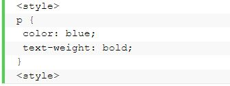
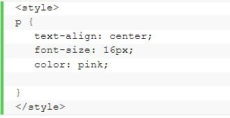

Home
Tentang Saya
Home
Tentang Saya
Berisi Penjelasan Materi HTML dan CSS serta Contoh Penerapannya
CSS adalah bahasa Cascading Style Sheet dan biasanya digunakan untuk mengatur tampilan elemen yang tertulis dalam bahasa markup, seperti HTML. CSS berfungsi untuk memisahkan konten dari tampilan visualnya di situs.
Sebelum menggunakan CSS, semua stylizing harus disertakan ke dalam markup HTML. Itu berati Anda harus mendeskripsikan semua background, warna font, alignment, dan lain-lain secara terpisah. Dengan CSS, Anda dapat mengatur tampilan semua aspek pada file yang berbeda, lalu menentukan style, kemudian mengintegrasikan file CSS di atas markup HTML. Alhasil, markup HTML bisa lebih mudah di-maintain. Singkatnya, dengan CSS, Anda tidak perlu mendeskripsikan tampilan dari masing-masing elemen secara berulang-ulang. Anda tidak membuang-buang waktu, kode yang digunakan pun lebih singkat, dan error dapat diminimalisir. Karena opsi kustomisasi yang ada hampir tak terbatas, CSS memungkinkan Anda untuk menerapkan berbagai macam style pada satu halaman HTML.
CONTOH CSS

